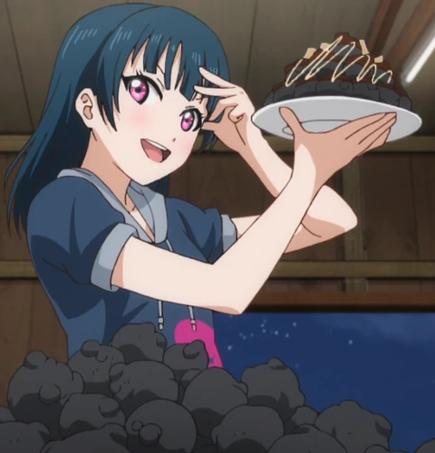

Tears of a Fallen Angel

Yohane's unholy spheres of spice
This devlish recipe comes directly from Yoshiko the great fallen angel Yohane helself.
The spice is so immense that it can accurately simulate what it is like to burn in hell.
Ingredients
- A takoyaki pan
- Skewers
- 1 cup flour
- 2 tsp baking powder
- 1/2 tsp salt
- 2 eggs
- 1 tsp soy sauce
- 1.5 cups dashi
- 40 drops blue food coloring
- 100 drops green food coloring
- 120 drops red food coloring
- 1/3 cup tenkasu
- 2 chopped scallions
- 2 tbs neutral-flavored oil
- Alot of tabasco sauce
- 3 tbsp worcestershire sauce
- 1 tsp mentsuyu
- 3/4 tsp sugar
- Kewpie mayo
Instructions
- Mix the flour, baking powder, and kosher salt in a bowl.
- Add the eggs, soy sauce, and dashi to the mix.
- Add the food coloring with an even spread.
- Whisk it all together and transfer the batter to a pitcher for easy pouring.
- Cut the scallions into fine slices.
- Generousley oil the takoyaki pan and heat it to 400*F.
- Pour the batter into every chamber until they overfill.
- Sprinkle the tenkasu and scallions over the top of each chamber.
- Just start pouring the tabasco into every chamber, as much as your heart desires.
- Wait 3 minutes.
- Break the connecting batter between the balls and rotate each piece 90 degrees toward the bottom of the pan, stuffing the dough together to form a ball shape.
- Wait 4 more minutes.
- Rotate the balls another 90 degrees to complete the ball shape.
- Waint another 4 minutes.
- Move the balls onto a plate.
- Pour the worcestershire sauce, mentsuyu, sugar, and ketchup into a seperate bowl and mix together to make the takoyaki sauce.
- Pour the takoyaki sauce,some kewpie mayo, and any leftover scallions on top of the balls.
- The dish is done and ready to serve but be careful, it't hot.